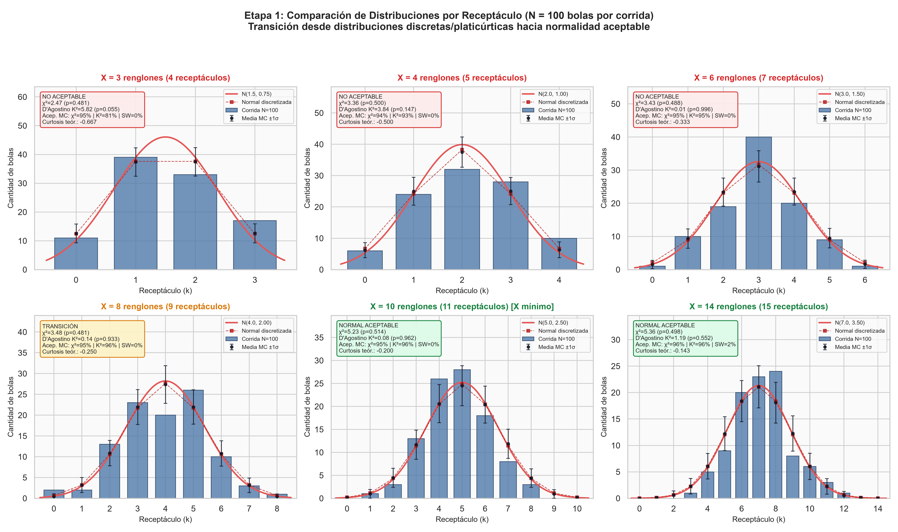
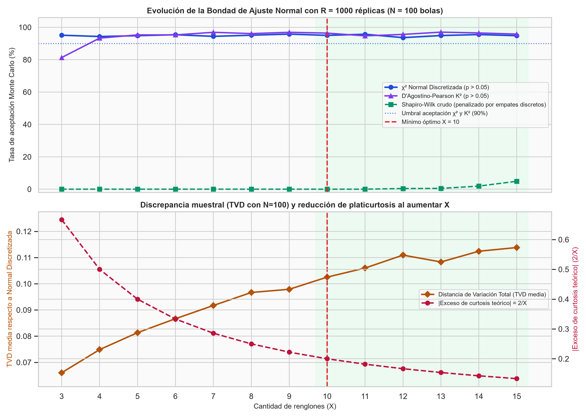
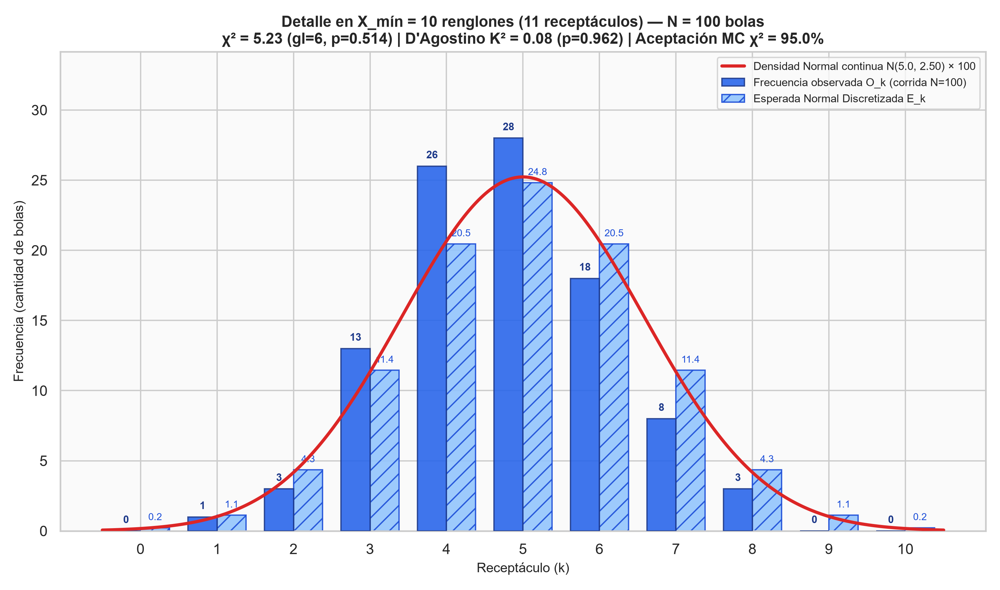
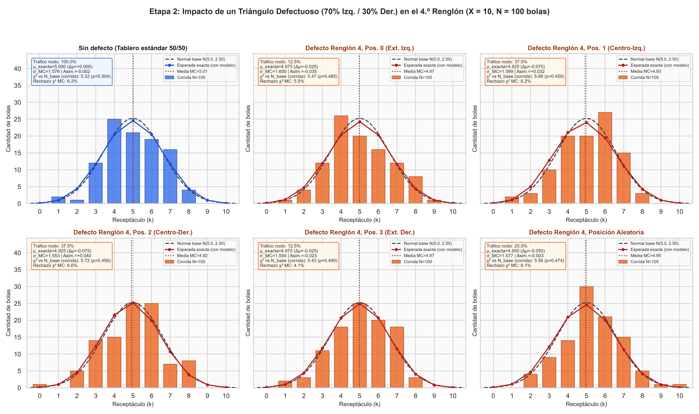
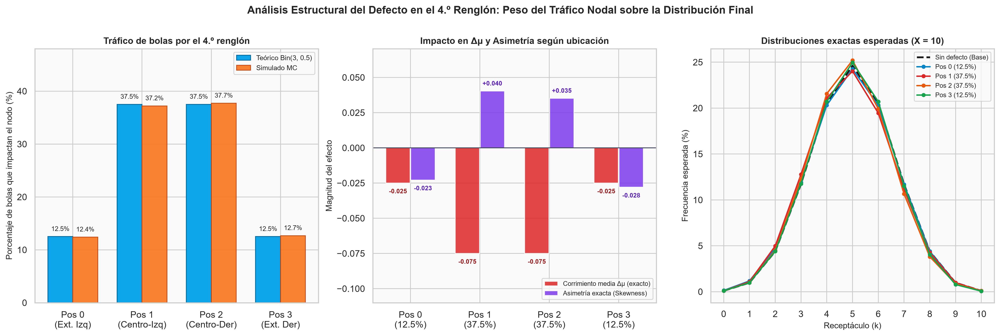

Máquina Física entre Vidrios Listo para lanzar N = 100 bolas
Equivale a 11 copas/receptáculos en la base. Recién desde X = 10 se cumplen simultáneamente todos los criterios de normalidad.
Ideal para conteos discretos en contenedores: integra la normal en [k-0.5, k+0.5] y agrupa colas con regla de Cochran (E_i ≥ 5).
Con 100 bolas cayendo en pocos enteros hay >85% de empates exactos. Shapiro-Wilk asume variable continua sin empates.
Tabla Completa Monte Carlo — Etapa 1 (N = 100 bolas, R = 1.000 réplicas por X)
| Renglones (X) | Receptáculos | Clases Cochran (E≥5) | gl | χ² medio | p-valor med. (χ²) | % Acep. χ² | % Acep. K² | % Acep. SW crudo | Curtosis teór. (-2/X) | Veredicto |
|---|

Gráficos de columnas (X = 3, 4, 6, 8 vs. X = 10 mínimo y X = 14): Se observa cómo para X ≤ 6 la campana es demasiado achatada (platicúrtica); en X = 10 ya adopta la campana gaussiana estable.

Evolución de criterios: χ² y D'Agostino-Pearson K² superan el 90% mientras la platicurtosis |2/X| baja a ≤ 0.20 en X = 10. Shapiro-Wilk crudo queda ~0% por empates discretos.

Zoom en X_mín = 10 renglones: Comparación barra a barra entre frecuencias observadas (N=100), esperadas de la Normal Discretizada N(5.0, 2.50) y densidad continua.
¿Por qué importa la ubicación en el 4.º renglón?
Para llegar al 4.º renglón, cada bola atravesó 3 renglones sanos (50/50), generando 2³ = 8 caminos posibles. Los dos triángulos centrales reciben el 37.5% (3/8) de las bolas cada uno, mientras los extremos reciben solo el 12.5% (1/8).
Tabla Comparativa — Etapa 2 (X = 10, N = 100, R = 1.000 réplicas)
| Escenario | Tráfico nodo | μ exacta | Δμ | Desvío MC | Asim. exacta | p mediano χ² | % Rechazo χ² |
|---|
1) Pos 1 y Pos 2 (centro): triplican el corrimiento de la media (Δμ = -0.075 vs. -0.025).
2) Mitad izquierda (Pos 0, Pos 1): manda bolas más al borde izquierdo → aumenta el desvío (s ≈ 1.600).
3) Mitad derecha (Pos 2, Pos 3): devuelve bolas hacia el centro → reduce el desvío (s ≈ 1.554).
4) Con N = 100 bolas y 6 renglones sanos debajo, el sesgo máximo equivale al 4.7% de σ, por lo que χ² individual rara vez lo detecta (~6.2%–6.6% de rechazo).

Comparación visual sin defecto vs. cada ubicación en el 4.º renglón: Gráfico de columnas para X = 10 con N = 100 bolas.

Análisis estructural: Tráfico nodal en el 4.º renglón (12.5% / 37.5% / 37.5% / 12.5%), comparación de Δμ y asimetría, y superposición de curvas exactas.
Guion Rápido de 3 Minutos para Presentar al Profesor
Hacé clic en cualquier paso para cargar automáticamente el escenario con animación en el Simulador en Vivo y leer la explicación lista para decir.
Paso 1 — Mostrar cómo funciona el modelo físico (Figura del TP: X = 4)
Mostrale el tablero del enunciado con 4 renglones y 5 copas, lanzando 1 bola en cámara lenta o N = 100 bolas.
Paso 2 — Demostrar el mínimo necesario (X_mín = 10 renglones)
Cambiá a 10 renglones (11 copas) y corré 1.000 réplicas Monte Carlo para que no dependa de la suerte de una sola corrida.
Paso 3 — Etapa 2: Defecto en un extremo del 4.º renglón (Pos 0)
Activá el defecto 70% izquierda / 30% derecha en la Posición 0 (borde izquierdo del 4.º renglón) y simulá 1.000 corridas.
Paso 4 — Etapa 2: Defecto en el centro del 4.º renglón (Pos 1 o Pos 2)
Mové el defecto al nodo central (Posición 1 ó 2) para comparar contra el extremo.